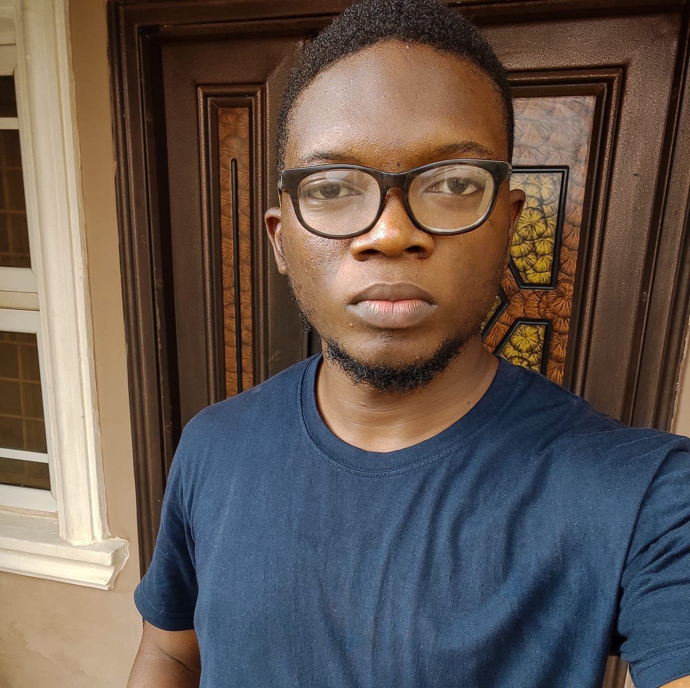

MY RESUME

King-david Lumi Dangana
Summary
Highly motivated electrical and electronics engineering graduate eager to
contribute technical expertise and problem-solving skills in a challenging
engineering role. Seeking opportunities to apply classroom knowledge and
hands-on experience to make valuable contributions to a dynamic
organization.
Address: No. 8 New Bussa Crescent Dawaki Model City Dawaki Abuja
Telephone: +2347037238129
Email: kdangana7@gmail.com
Education
University Of Abuja - Bachelor of Engineering(Electrical & Electronics)
Electronics, Circuits and Systems, Control Systems, Digital Signal
Processing, Power Systems, Communication Systems,
Electromagnetic Fields, Microelectronics, MATLAB.
AI6 Abuja / Active Learning Community
Introduction to data science, Computer Programming, Artificial
Intelligence
Daystar Christian Academy / Senior Secondary School
Certificate
Basic Knowledge in Physics, Chemistry, Computer science, Technical
Drawing, Mathematics.
Therbow School / Junior Secondary School Certificate
Basic Secondary school Knowledge.
Faith Children Center / First School leaving Certificate
Introduction to Education
Work Experience
APIN Public Health Initiative / IT Support Assistant
November 2023 - Present, Jos Plateau State.
- Assists with tasks such as troubleshooting hardware and software,
providing technical support, maintaining systems and assisting in the
implementation of IT projects.
- Involved in documenting processes, performing routine system
checks and collaborating with the IT team to enhance overall system
efficiency.
- Learn and develop their skills under the guidance of an experienced
professional.
Executive Airlift Group / Trainee Aircraft Maintenance
Engineer (National Youth Service Corps. NYSC)
August 2022 - May 2023, Abuja Airport, FCT
- Performed aircraft maintenance activities in accordance with
aviation regulations safety standards and procedures
- Assisted in conducting troubleshooting on complex technical
issues related to aircraft maintenance.
- Replaced defective parts in the implementation of corrective
actions for identified defects
- Undertook routine inspection of aircraft components and
systems to identify faults or potential problems
- Building and replacing of aircraft tyres
- Receiving regular lectures on problems occurred in the field
Turbo Energy / Engineering intern (Holiday Volunteer)
March 2022 - May 2022, Gudu, Abuja
- A three months internship where I learned how to assemble
different components of an electrical components
Nigerian Television Authority / Engineering Intern (Student
Industrial Work Experience Scheme, SIWES 2)
March 2021 - June 2021, Area 11, Abuja
- Assisted senior engineers in troubleshooting and maintaining
broadcast equipment, ensuring uninterrupted on-air
transmission.
- Collaborated with the engineering team to design and
implement improvements in the station's technical setup,
enhancing overall efficiency.
- Conducted regular tests and calibrations on cameras, monitors,
audio systems, and transmission lines to guarantee optimal
performance.
- Supported live broadcasts by setting up equipment, monitoring
audio-video quality, and addressing technical issues in real
time.
- Contributed to the installation of new production equipment,
including wiring, cabling, and integration into existing
systems.
Nigerian Airspace Management Authority / Engineering
Intern (Student Industrial Work Experience Scheme, SIWES 1)
September 2019 - December 2019, Abuja Airport, FCT
- Collaborated with senior engineers to troubleshoot and
diagnose electrical faults in communication, navigation, and
surveillance systems.
- Assisted in the maintenance, calibration, and testing of critical
air traffic control equipment to ensure safe and efficient
operations.
- Supported the implementation of hardware and software
upgrades for radar and navigation systems, contributing to
improved accuracy and reliability.
- Participated in on-site inspections of remote air traffic control
facilities to assess equipment performance and recommend
corrective actions.
- Conducted electrical safety checks and compliance
assessments to ensure adherence to industry standards and
regulations.
- Assisted in the installation of category 3 Instrument landing
system which includes localizer and glide slope
Referees
Godwin Oyelekan Idowu
Abuja, FCT
godwinidowu@yahoo.com
+234 803 316 3943
Bulus Ayuba
Victoria island, Lagos
bulus.ayuba@moneymasterpsb.com
+234 812 830 8654
Afolabi Nathanael Bamigboye
Senior Research Monitoring & Evaluation Officer II
Breakthrough ACTION Nigeria
nathanael@ba-nigeria.org
+234 803 214 9564
Engr. Dr. Nyangwarimam Obadiah Ali
Senior Lecturer and Head of Department, Computer
Engineering, Faculty of Engineering, Nile University of Nigeria
ali.obadiah@nileuniversity.edu.ng
+234 803 654 5627
Skills and Certificates